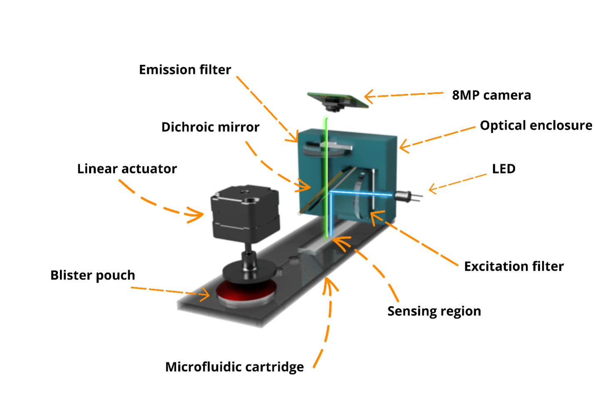

Optical readout
The reader is presented as a defined imaging system built around bedside usability.
Technology
Sepsensor combines fluorescence imaging with a disposable assay cartridge and a ratio-based calibration strategy. The page is organized to explain how those layers work together as a bedside platform.

Architecture
The redesign separates optical readout, consumable workflow, and calibration logic so the platform feels like a real product architecture rather than a collection of parts.
The reader is presented as a defined imaging system built around bedside usability.
The disposable cartridge makes the operating model concrete and easier to understand.
Ratio-based correction is shown as core product logic that supports more reliable readout.
Physical system
Cartridge insertion, sensing geometry, and the biosensor architecture are shown together so the website communicates a more mature engineering story.
The exploded system image clarifies how illumination, filtering, and actuation fit together.
Cartridge visuals ground the prototype in a real user workflow instead of abstract hardware talk.
Showing component logic helps position Sepsensor as a serious medtech build effort.

